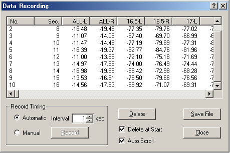
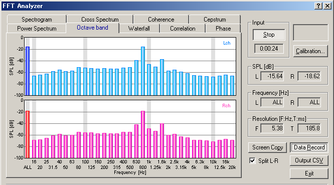

DSSF3 > RA > Reference Manual > FFT Analyzer

| Items | Description |
|---|---|
| Data list | Measurement data is displayed. |
| Record Timing | Automatic: Measured data is recorded automatically with the specified interval. Manual: Measured data is recorded when the "Record" button is clicked. |
| Delete | Deletes all data. |
| Delete at Start | Recorded data is deleted when the measurement is started. |
| Auto Scroll | Latest data is already displayed by scrolling the data list. |
| Save File | Saves the recorded data as .csv or .txt format. |
| Close | Closes the Data Recording dialog. |

DSSF3 > RA > Reference Manual > FFT Analyzer